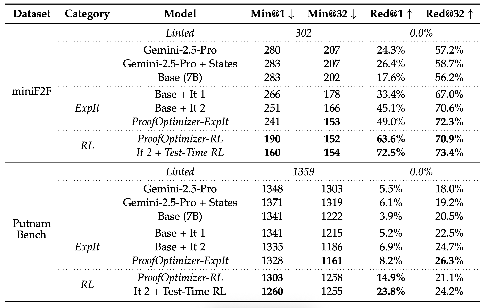

✂️ ProofOptimizer: Training Language Models to Simplify Proofs without Human Demonstrations

Large language models (LLMs) trained for theorem proving in formal systems like Lean have made remarkable progress—some now perform at near–International Mathematical Olympiad (IMO) level. These models benefit from reinforcement learning (RL) on Lean proofs, where correctness can be mechanically verified, eliminating hallucinations and providing clean reward signals. However, the same RL process that ensures correctness often leads to proofs that are technically valid but unnecessarily long, redundant, and opaque. For example, Seed-Prover’s Lean solution to IMO 2025 Problem 1 spans over four thousand lines—roughly sixteen times longer than its informal counterpart—making it hard to read, slow to verify, and poorly suited for further model training.
To address this, we introduce ProofOptimizer, a system that automatically simplifies Lean proofs while preserving correctness. ProofOptimizer combines a symbolic linter, a fine-tuned 7B language model specialized for proof simplification, and an iterative inference algorithm that progressively shortens proofs. It can reduce proof length by over 87% on MiniF2F and 57% on PutnamBench, and even halve the size of recent IMO proofs. Beyond aesthetics, shorter proofs improve both training efficiency and Lean’s verification speed, suggesting that proof simplification may be as crucial to formal reasoning as correctness itself.
Task Definition: Proof simplification means taking a valid Lean proof and producing a simpler one that still proves the same statement. Given a theorem with proof p, the goal is to find another valid proof p* that minimizes some measurable complexity metric L. In this work, we use proof length—the number of Lean tokens—as our measure of simplicity. This captures structural brevity while ignoring variable names, comments, and formatting, though the approach can generalize to any automatically computed metric.
Evaluation Metrics: For each original proof and its k candidates for simplification, we measure the length of each valid candidate. We report two metrics:
We created a high-quality dataset for training proof-simplifying models using a four-step pipeline:
sorry.AUTO tactic.We compare two training approaches for ProofOptimizer. ProofOptimizer-ExpIt (expert iteration) gradually improves the model by sampling candidate simplifications, verifying them in Lean, and retraining on successful reductions. Across multiple rounds, this process steadily improves both minimum proof length and relative reduction metrics. ProofOptimizer-RL (online RL) runs GRPO with relative reduction in proof length as a reward. RL significantly improves single-sample performance but can reduce diversity, a common effect. Finally, running online RL on the evaluation set at test-time further boosts single-shot performance. Overall, our ProofOptimizer outperforms strong baselines like Gemini-2.5-Pro, achieving substantial proof shortening while maintaining correctness.

We study several algorithms at inference-time, and find iterative proof shortening to be the most effective.
For a given proof, we sample
Finally, we demonstrate the effectiveness of ProofOptimizer on an out-of-distribution dataset, Seed-Prover's four IMO 2025 proofs. Using an order of magnitude higher sampling budget, we achieve a significant reduction in the proof length for all four problems, showcasing the potential of our model and technique.
Training on Simplified Proofs Improves Generation: We explored whether training on shorter, cleaner proofs helps models learn more effectively. To test this, we fine-tuned identical models on two datasets: one containing original proofs generated by Goedel-Prover-V2, and another containing the same proofs simplified by ProofOptimizer. The simplified versions were about 40% shorter on average. While both training runs reached similar final losses, models trained on simplified proofs achieved slightly higher accuracy on the MiniF2F benchmark. This suggests that shorter, more structured proofs may provide clearer learning signals and reduce training instability caused by overly long or noisy examples.
Simplified Proofs Run Faster: Simpler proofs don’t just read better—they often execute faster. Using Lean’s profiling tools, we compared the compilation times of original and simplified proofs. Across MiniF2F and PutnamBench, most simplified proofs ran faster, with roughly two-thirds showing at least a 10% speedup and many exceeding 50%. The improvement was especially large for proofs that were slow to begin with. The gains mainly come from eliminating redundant tactics, though in a few cases, shorter proofs were slower when they replaced efficient strategies with simpler but less optimized reasoning.
ProofOptimizer shows that language models can be trained not just to generate correct formal proofs, but also to make them significantly more concise and readable. By combining expert iteration, reinforcement learning, and Lean-based verification, our approach achieves dramatic reductions in proof length—up to 87% on MiniF2F and 57% on PutnamBench—while maintaining correctness.
Beyond shortening proofs, simplified proofs have practical benefits: they execute faster in Lean and can improve downstream model training, leading to better performance on new theorem proving tasks. Overall, proof simplification bridges the gap between mechanically verified correctness and human-understandable reasoning, making AI-generated mathematics both reliable and interpretable.
@article{gu2025proofoptimizer,
title={ProofOptimizer: Training Language Models to Simplify Proofs without Human Demonstrations},
author={Alex Gu and Bartosz Piotrowski and Fabian Gloeckle and Kaiyu Yang and Aram H. Markosyan},
year={2025},
journal = {arXiv preprint arXiv:2510.15700},
}